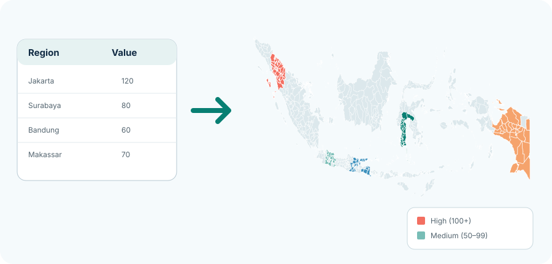
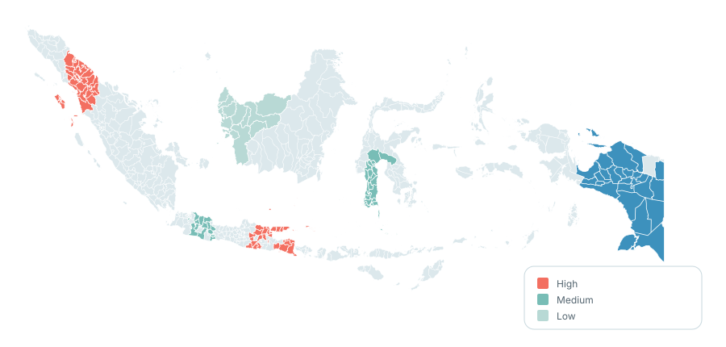

Feature
Map your spreadsheet data in minutes.
Upload or paste your data and turn rows and columns into clear, color-coded maps.

Works in your browserNo install required.
No account requiredOpen a workspace when you are ready.
Your spreadsheet stays on your deviceNo uploads or analytics.
Indonesia region data with source detailsRead the method
From spreadsheet to map in four steps
- 1Add data
Paste a table or upload CSV, TSV, or XLSX.
- 2Match regions
Confirm each row points to the right region.
- 3Design map
Choose colors, labels, and a legend.
- 4Export
Download a supported image, PDF, or match table.
Why it works for your workflow
- Transform raw data into visual insights.
- Use your own metrics and KPIs.
- Keep data on your device.
- Export for reports, presentations, and dashboards.

Best practices
- Use consistent official region names.
- Clean duplicate and extra-space issues.
- Use clear numerical values and units.
- Review unmatched items.
- Review the legend before export.
Useful starting points
Ready to map your data?
Upload or paste your spreadsheet and see results in seconds.